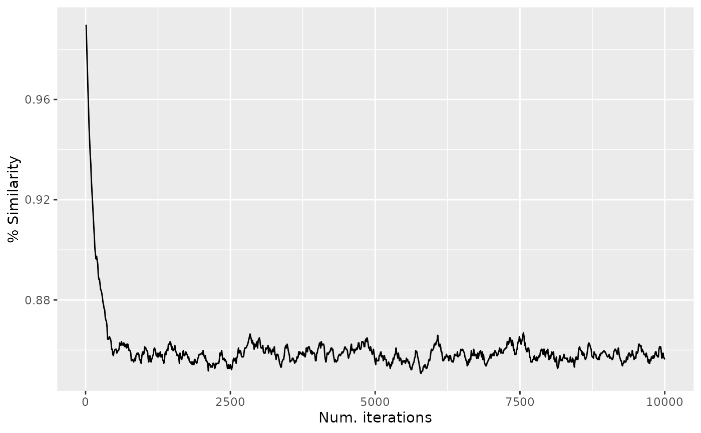
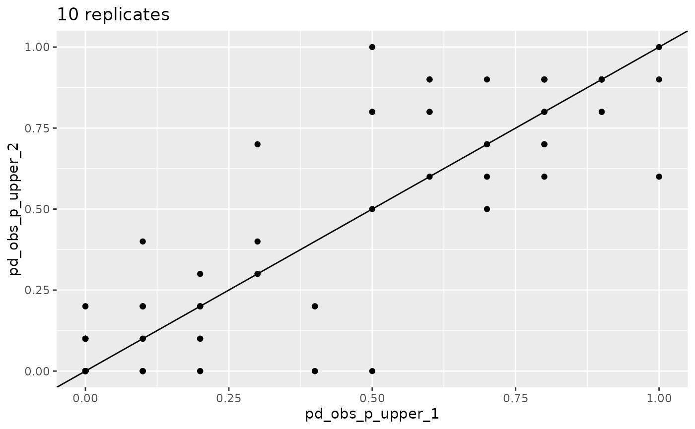
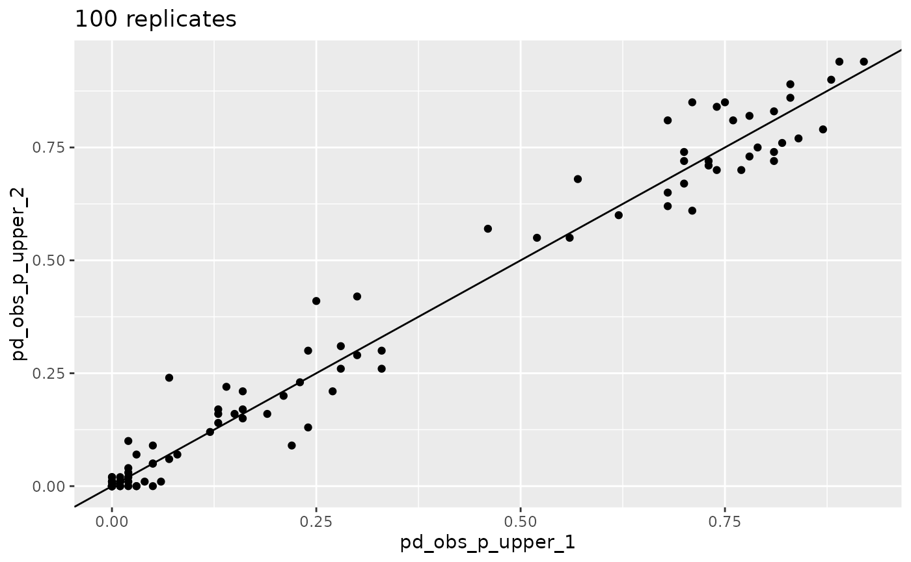
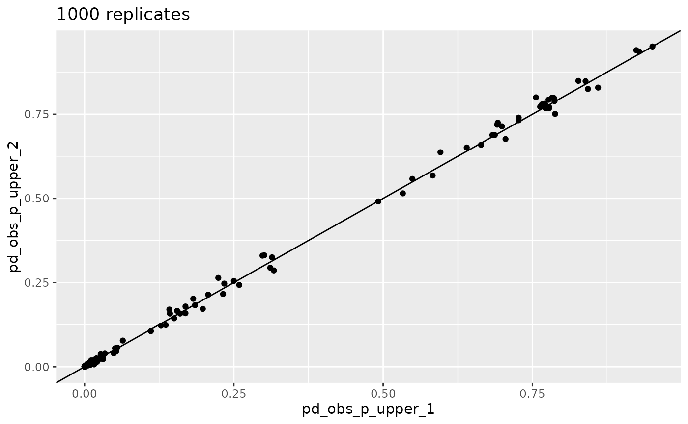

vignettes/how-many-rand.Rmd
how-many-rand.RmdA central part of CANAPE is comparing observed values with randomizations. It is up to the user to set the number of randomizations… but how does one know if the number of randomizations is sufficient?
(This vignette assumes a basic understanding of CANAPE, community data matrices, and randomizations. If you aren’t familiar with any of these, you should probably see the the CANAPE example vignette first).
There is a rich literature on choice of randomization algorithms in ecology (see references below), so I won’t go into this too much, but choice of algorithm can have a large impact on results, so it’s important to understand.
As described by Strona, Ulrich, and Gotelli (2018), randomization algorithms can vary in their degree of degree of conservation; that is, how closely they resemble the original data. At one extreme, some algorithms require row and column sums (i.e., marginal sums) to be perfectly preserved between the original data and the randomized data (more conservative)1; at the other, marginal sums may be completely different (less conservative). More conservative algorithms are less prone to type II error but more prone to type I error; the opposite is true for less conservative algorithms. Generally you want the randomization algorithm to only change the one aspect of the data that you are interested in testing. The ultimate choice of algorithm will depend on the data, ecological conditions, and computing restraints.
canaper uses the vegan package for randomizations. There are a large number of pre-defined randomization algorithms available in vegan2, as well as the option to provide a user-defined algorithm. For details about each pre-defined algorithm, see vegan::commsim().
For this vignette, I will use the swap algorithm, a “more conservative” algorithm that preserves marginal sums (Gotelli and Entsminger 2003) and has been widely used in ecological studies3.
Before proceeding, we need to clarify some terminology. cpr_rand_test() includes two arguments, n_reps and n_iterations. These sound similar but refer to two very different things.
n_reps is the number of random communities to simulate. For example, if n_reps is 100, will we be comparing each observed value (e.g., phylogenetic diversity, pd_obs), with 100 random replicates of pd_obs. If n_reps is too low, we will lack sufficiently statistical power to detect patterns in the data.
n_iterations is only used by some randomization algorithms, the “sequential” algorithms. Sequential algorithms randomize a community matrix by exchanging values between existing cells (“swapping”). As you might guess, the swap algorithm is a sequential algorithm. One such swap is a single “iteration”. If the total number of iterations, n_iterations, is too low, the randomized matrix won’t be sufficiently randomized, and will still resemble the original matrix4.
If either n_reps or n_iterations are set too high, it will take overly long to finish the calculations. So our goal is to set them sufficiently high to achieve proper randomization, but not so high cpr_rand_test() never finishes.
n_iterations
First, let’s load the packages used in this vignette.
library(canaper) # This package
library(picante) # For generating random communities
library(vegan) # For Mantel test
library(tictoc) # For timing
library(tidyverse) # For tidy codeNext we will test the effects of n_iterations, using the test dataset that comes with canaper (and Biodiverse). I will increase the number of iterations in powers of 10 from 10 to 1,000,000, and compare the correlation between the original matrix and the randomized matrix:
# "swap" produces a binary matrix, so convert the input matrix to binary too:
comm_bin <- as.matrix(biod_example$comm)
comm_bin[comm_bin > 0] <- 1
# Set random number seed so the results are reproducible
set.seed(12345)
# Use a tibble to hold the data and run loops
dist_test_res <- tibble(
# Set up a vector from 10 to 10^6 for testing n_iterations
n_iter = magrittr::raise_to_power(10, 1:6),
# Make one random community for each value of `n_iter`
rand_comm = map(
n_iter,
~cpr_rand_comm(
comm_bin,
null_model = "swap", n_iterations = .)),
# Calculate the Pearson correlation (r) between each randomized
# matrix and the original matrix by converting
# the matrices to vectors
corr = map_dbl(
rand_comm,
~cor(c(comm_bin), c(.)) #c() converts a matrix to vector
)
)
# Plot the results
ggplot(dist_test_res, aes(x = n_iter, y = corr)) +
geom_point() +
geom_line() +
scale_x_log10() +
labs(x = "Num. iterations", y = "Pearson's r")
From this, we can see that the original community and the randomized community are correlated up to about 1,000 to 10,000 iterations. After that, the correlation coefficient levels off, and doesn’t decrease much further with additional “mixing”5.
Note that the number of iterations required will vary based on the dataset. It will likely be higher in datasets that are extremely skewed towards a high percentage of presences or absences, since a given swap is unlikely to actually change anything. So I recommend exploring the data as above to determine the minimum number of iterations needed.
Now that we’ve settled on the number of iterations per random replicate, let’s look into the number of replicates.
n_reps
With randomizations, there is no “right” answer, so we can’t test to see that cpr_rand_test() produces the exact answer we’re looking for. Rather, we will check that it starts to converge on approximately the same result once n_reps is high enough.
Here, I will compare the percentile of observed phylogenetic diversity relative to random (pd_obs_p_upper, one of the values used for calculating endemism type) between pairs of random communities each generated with the same number of replicates6. I will also time calculations for one of each pair.
# Specify a different random seed for each set of randomizations so they give
# different, reproducible results
# First set
set.seed(12345)
tic()
res_10_1 <- cpr_rand_test(
biod_example$comm, biod_example$phy,
null_model = "swap",
n_iterations = 10000, n_reps = 10, tbl_out = TRUE)
toc()
#> 6.434 sec elapsed
tic()
res_100_1 <- cpr_rand_test(
biod_example$comm, biod_example$phy,
null_model = "swap",
n_iterations = 10000, n_reps = 100, tbl_out = TRUE)
toc()
#> 8.257 sec elapsed
tic()
res_1000_1 <- cpr_rand_test(
biod_example$comm, biod_example$phy,
null_model = "swap",
n_iterations = 10000, n_reps = 1000, tbl_out = TRUE)
toc()
#> 79.847 sec elapsed
# Second set
set.seed(67890)
res_10_2 <- cpr_rand_test(
biod_example$comm, biod_example$phy,
null_model = "swap",
n_iterations = 10000, n_reps = 10, tbl_out = TRUE)
res_100_2 <- cpr_rand_test(
biod_example$comm, biod_example$phy,
null_model = "swap",
n_iterations = 10000, n_reps = 100, tbl_out = TRUE)
res_1000_2 <- cpr_rand_test(
biod_example$comm, biod_example$phy,
null_model = "swap",
n_iterations = 10000, n_reps = 1000, tbl_out = TRUE)Next, plot the results.
# We will make the same plot repeatedly, so write
# a quick function to avoid lots of copying and pasting
plot_comp <- function(res_1, res_2) {
left_join(
select(res_1, site, pd_obs_p_upper_1 = pd_obs_p_upper),
select(res_2, site, pd_obs_p_upper_2 = pd_obs_p_upper), by = "site") |>
ggplot(aes(x = pd_obs_p_upper_1, y = pd_obs_p_upper_2)) +
geom_point() +
geom_abline(slope = 1, intercept = 0)
}
plot_comp(res_10_1, res_10_2) + labs(title = "10 replicates")
plot_comp(res_100_1, res_100_2) + labs(title = "100 replicates")
plot_comp(res_1000_1, res_1000_2) + labs(title = "1000 replicates")
This visualization shows how the randomization results converge as n_reps increases.
The above plots illustrate convergence for one particular aspect of CANAPE, but what about endemism type itself? We can look at that too.
# Define a helper function that joins two datasets and calculates % agreement
# on endemism type between them
calc_agree_endem <- function(df_1, df_2, n_reps) {
left_join(
df_1 |> cpr_classify_endem() |> select(site, endem_type_1 = endem_type),
df_2 |> cpr_classify_endem() |> select(site, endem_type_2 = endem_type),
by = "site"
) |>
mutate(agree = endem_type_1 == endem_type_2) |>
summarize(agree = sum(agree), total = n()) |>
mutate(
p_agree = agree/total,
n_reps = n_reps)
}
bind_rows(
calc_agree_endem(res_10_1, res_10_2, 10),
calc_agree_endem(res_100_1, res_100_2, 100),
calc_agree_endem(res_1000_1, res_1000_2, 1000),
)
#> # A tibble: 3 × 4
#> agree total p_agree n_reps
#> <int> <int> <dbl> <dbl>
#> 1 100 127 0.787 10
#> 2 120 127 0.945 100
#> 3 127 127 1 1000At 1,000 replicates, we see 100% agreement on endemism type between the two randomizations! Convergence doesn’t get better than that7 :)
Of course, another important consideration is how long calculations take. You can see that time increases with n_reps, but not exactly in a linear fashion. We don’t have the space to go into benchmarking here, but this illustrates the time / n_reps trade-off8.
In this case (the example dataset that comes with canaper), we see that a minimum of 1,000 random replicates with 10,000 swapping iterations per replicate is probably needed to attain robust results.
I hope this vignette helps you determine the settings to use for your own dataset!
Gotelli, Nicholas J., and Gary L. Entsminger. 2003. “Swap Algorithms in Null Model Analysis.” Ecology 84 (2): 532–35. https://doi.org/10.1890/0012-9658(2003)084[0532:sainma]2.0.co;2.
Strona, Giovanni, Werner Ulrich, and Nicholas J. Gotelli. 2018. “Bi‐dimensional Null Model Analysis of Presence‐absence Binary Matrices.” Ecology 99 (1): 103–15. https://doi.org/10.1002/ecy.2043.
In the case of a community matrix with species as columns and rows as sites, the row sums are the total richness per site and the column sums are the total abundance per species. So preserving these means that rare species stay rare, sites with few species stay that way, etc. Only the species identity in each site changes.↩︎
32 as of vegan v2.5.7, though not all may be applicable.↩︎
The Biodiverse blog has a nice explanation of the swap algorithm.↩︎
A third argument, thin, only applies to a small number of algorithms; for details, see vegan::commsim()↩︎
In fact the graph suggests that with too much mixing, we might start to come back to the original!↩︎
Other values based on the randomizations could be checked too (e.g., values ending in _obs_z, _rand_mean, or _rand_sd).↩︎
Though I wouldn’t expect necessarily expect this from messier, “real-life” datasets.↩︎
You can of course speed things up with parallelization. For details, see the CANAPE example vignette.↩︎